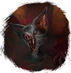

Открыть в интерактивной вики →
| Уровень | 28 |
|---|---|
| Сила (PvE) | 722 |
| Аспект | Solnai |
| Здоровье | 2500 |
| Мана | 2000 |
| Выносливость | 2000 |
| Респаун | 60 минут - 70 минут |
Локация
- Пещеры под Топями
- Пещеры под Башнями
- Забытый коридор
- Кладбище Ящериц
- Ящериное кладбище

Открыть в интерактивной вики →
| Уровень | 28 |
|---|---|
| Сила (PvE) | 722 |
| Аспект | Solnai |
| Здоровье | 2500 |
| Мана | 2000 |
| Выносливость | 2000 |
| Респаун | 60 минут - 70 минут |